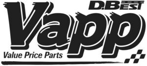

Trade Mark Journal No.2025/050 12 December 2025
WO0000001888867 (35)
Office of origin: Japan
Date of International Registration:9 October 2025
Date of designation in the UK:
9 October 2025

Value Price Parts.
International priority date claimed: 2 October 2025
(Japan)
- Class 35
- Advertising agency services; organization of exhibitions for commercial or advertising purposes; providing advice in the field of marketing and business management; business management analysis; systemization of information into computer databases; office functions; developing promotional campaigns for businesses; market research; advisory services for business management; business efficiency expert services; administrative processing of purchase orders; commercial intermediation services; accounting; import and export agencies; invoicing services; management of computerised files; compilation of information into computer databases; providing commercial information and advice for consumers in the choice of products and services; retail or wholesale services for automobile parts; retail or wholesale services for structural parts for trucks, structural parts for trailers, structural parts for buses and structural parts for road tractors; retail or wholesale services for structural parts for traction engines; retail or wholesale services for structural parts for passenger cars; retail or wholesale services for parts and fittings of two-wheeled motor vehicles; retail or wholesale services for structural parts of loading and unloading machines; retail or wholesale services for structural parts of building machines; retail or wholesale services for structural parts of construction machines; retail or wholesale services for structural parts of agricultural machines, namely, agricultural cultivators, harvesters for agricultural use and tilling machines for agricultural purposes; retail or wholesale services for air compressors for vehicles, engine oil injection systems for engines, air filters for engines, oil filters for engines, fuel injectors, control valves for regulating the flow of gases and liquids being parts of machines, hydraulic hoses of rubber, pistons for cylinders, power steering pumps for land vehicles, tyre-pressure measurers, exhaust gas treatment systems for diesel engines, diesel exhaust fluid, namely, urea solution water, coolants for vehicle engines, hydraulic brake fluid and hydraulic oils; retail or wholesale services for valves being parts of pumps, valves being parts of machines, hydraulic hoses of plastic and retarder used as engine brakes for heavy land vehicles; retail or wholesale services for fittings of metal for compressed air lines, air springs for vehicle suspension components for cushioning driver's seats and cabs, rubber tracks being parts of crawlers on loading-unloading machines and apparatus, superchargers, drying installations, desiccants, desiccating apparatus, connectors, not of metal, for pipes, couplings of rubber for pipes, pipe muffs, valves as machine components, pressure regulating valves for air brakes, pumps for machines, thermostatic control valves for machines and clack valves being parts of machines; retail or wholesale services for tubing and tubing couplings of metal for joining and terminating pipes, metal pipe couplings, metal pipe connectors, pneumatic waste oil drainers, pneumatic door openers and closers being parts of machines, air compressors and unloading check valves for the outlets of air compressors; retail or wholesale services for vehicle wheel hubs, ABS, namely anti-lock braking systems for automobiles, traction control systems for automobiles, horns for automobiles, lubricating pumps, apparatus for testing vehicle brakes, apparatus for testing vehicle transmissions, thermostats for vehicles, brake shoes for vehicles, brake cylinders for vehicles, shock absorbing air springs for vehicles, vehicle suspension air springs, suspension shock absorbers for land vehicles and hydraulic circuits for vehicles; retail or wholesale services for steam/oil separators, transmission shafts for land vehicles, electric actuators, electrical control, testing and monitoring apparatus, valves used for exhaust brake for land vehicles, drain cocks, remote control apparatus for opening and closing vehicle doors, oil drain pumps and oil separators; retail or wholesale services for water pumps for land vehicle engines, air brake systems comprising valves, compressors, regulators, pressure regulators, air driers, coupling heads for air ducts and connections for parts of air braking systems, clutch slave cylinders for land vehicles, clutch master cylinders for land vehicles, clutch mechanisms for land vehicles, gear shifts for land vehicles, gear shifts for land vehicles, electric, oil tarps equipped with air driers being parts of air braking systems for trucks, anti-pollution devices equipped with drained oil storage, used to remove oil mist from exhaust air discharged from air dryers for air brakes of land vehicles, air driers being parts of air braking systems for land vehicles, air brake chambers being parts of air braking systems for land vehicles, compressors being parts of air brakes systems for land vehicles, valves being parts of air braking systems for land vehicles and air reservoirs being parts of air braking systems for land vehicles; retail or wholesale services for oil pumps for land vehicle engines, cooling radiators used as engine oil coolers for land vehicles, exhaust gas recirculation [EGR] valves used for internal combustion engine for land vehicles, steering units for land vehicles, torque rod bushings being parts of suspension systems for land vehicle, vacuum servo being parts of hydraulic braking systems for land vehicle, brake calipers for land vehicles, brake shoes for land vehicles, brake cylinders for land vehicles, brake drums for land vehicles, brake pads for land vehicle, brake pedals for vehicles, brake master cylinder for land vehicles, brake linings for land vehicles, wheel cylinders being parts of drum braking systems for land vehicles and hydraulic torque converters for land vehicles; retail or wholesale services for driving motors for land vehicles, AC motors or DC motors for land vehicles, not including their parts, gear wheels for land vehicles, power transmissions and gearing, machine elements for the aforesaid land vehicles, exhaust gas recirculation valves for motors and engines for land vehicles, generators for land vehicles, brakes for vehicles, brake pads for land vehicles, brakes for land vehicles and parts and fittings of thereof, brake systems for land vehicles, hydraulic brake systems for land vehicles and coil springs for land vehicle suspensions; retail or wholesale services for hydraulic valves being parts of machines, hydraulic motors being parts of machines, hydraulic pumps being parts of machines, hydraulic circuits for vehicles, winch motors, clutch mechanisms for motor cars including clutch booster, precision reduction gears being parts of machines, reduction gears being parts of machines, event recorders, spring-assisted hydraulic suspension shock absorbers for land vehicles and driving motors, other than for land vehicles; retail or wholesale services for lubricating greases, industrial lubricants and lubricating oils; retail or wholesale services for LED lighting installations, batteries for vehicles, thermostats, solenoid valves, namely, electromagnetic switches and pressure sensors; retail or wholesale services for tyres; retail or wholesale services for floor mats, car washing brushes for vehicles; retail or wholesale services for sparking plugs for automotive engines, air filters for automobile engines; retail or wholesale services for electric wire harnesses for automobiles, blind spot cameras for cars, car antennas, navigational apparatus for automobiles; retail or wholesale services for air conditioning installations for cars, air purifiers for automobiles, dashboard cameras, audio speakers for automobiles; retail or wholesale services for automotive interior trim, bumpers for automobiles, sun shields and visors for motor cars, anti-theft warning apparatus for motor cars, children's safety seats for cars, wheel rims for automobiles.
Nabtesco Service Co., Ltd.
Representative: MIYAJIMA Manabu, KYOWA PATENT AND LAW OFFICE,, Nippon Life Marunouchi Building,, Marunouchi 1-6-6,, Chiyoda-Ku, Tokyo 100-0005, JAPAN